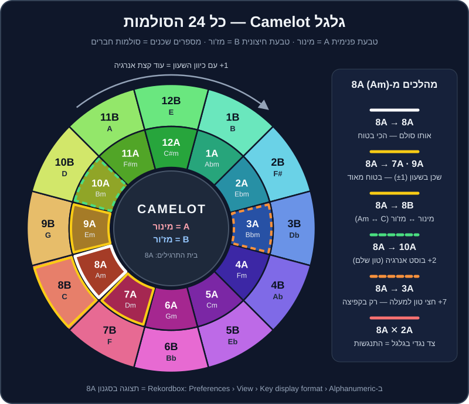

פרק 10 מתוך 20
מיקס הרמוני
Harmonic Mixing
איך לחבר שירים שגם 'מסתדרים' מוזיקלית ולא רק בקצב: סולמות, מז'ור ומינור, גלגל Camelot, המהלכים הבטוחים, Key Lock, ו-Key Shift / Key Sync ב-Rekordbox — ומתי מותר לשבור את החוקים.
יש רגע שכל DJ מתחיל מכיר: הביטמאצ'ינג מושלם, התופים נעולים, הפרייזים מיושרים — ובכל זאת, ברגע שהבאס והאקורדים של השיר השני נכנסים, משהו "מזייף". זה לא נשמע כמו שיר אחד גדול, אלא כמו שני מכשירי רדיו שמנגנים באותו חדר. הסיבה כמעט תמיד היא סולם (Key).
בפרק הזה נלמד לשמוע את זה, להבין למה זה קורה, ולהשתמש בכלי פשוט וגאוני — גלגל Camelot — כדי לבחור את השיר הבא כך שהמעבר יישמע כאילו הוא תוכנן מראש. ובסוף נדבר גם על הצד השני: מתי לא לעבוד לפי הספר.
מה תלמדו בפרק#
- מה זה סולם, ומה ההבדל בין מז'ור למינור — בלי תואר במוזיקה.
- איך קוראים את גלגל Camelot, כולל טבלה מלאה של 24 הסולמות והטראקים שלנו בכל אחד.
- חמשת המהלכים הבטוחים: אותו סולם, ±1, מעבר A↔B, בוסט +2, וקפיצת +7.
- למה חייבים להבין
Key Lock(ב-Rekordbox:Master Tempo) לפני שנוגעים בפיץ'. - איך משתמשים ב-
Key Shift, ב-Key Syncובכלי ההמלצה של Rekordbox. - מתי הרמוניה פשוט לא משנה — ומתי כדאי לשבור את החוקים בכוונה.
- תרגילים מעשיים עם קובצי התרגול
practice-10,practice-11,practice-12והטראקים של הרפו.
קצת תיאוריה, בלי כאב ראש#
12 צלילים, וזהו#
במוזיקה המערבית יש בסך הכול 12 צלילים שחוזרים על עצמם באוקטבות: דו, דו דיאז, רה, מי במול, מי, פה, פה דיאז, סול, לה במול, לה, סי במול, סי — ושוב דו. המרחק בין שני צלילים סמוכים נקרא חצי טון (semitone).
סולם הוא בחירה של 7 מתוך 12 הצלילים האלה, סביב צליל "בית" (ה-tonic). שיר בסולם לה מינור (A minor, או בקיצור Am) "חוזר הביתה" לצליל לה, ומשתמש בעיקר בצלילים לה, סי, דו, רה, מי, פה, סול.
מז'ור ומינור#
- מז'ור (
major) — נשמע לרוב בהיר, שמח, "פתוח". רוב שירי הפופ השמחים. - מינור (
minor) — נשמע לרוב כהה, רגשי, מסתורי. רוב הטכנו, המלודיק טכנו, הטק האוס, וגם הרבה מהמוזיקה הים-תיכונית.
הסוד: מז'ור ומינור "קרובי משפחה"#
לכל סולם מז'ור יש סולם מינור שמשתמש בדיוק באותם 7 צלילים. לה מינור ודו מז'ור (Am ו-C) חולקים את אותם צלילים — רק "הבית" שונה. לזוג כזה קוראים סולמות מקבילים (relative keys), ובגלל זה מעבר ביניהם נשמע טבעי לגמרי. זה בדיוק המעבר A↔B בגלגל Camelot.
למה שני סולמות "מתנגשים"?#
כששני טראקים מנגנים יחד, הבאס, האקורדים, הפדים והווקאל של שניהם נשמעים בו-זמנית. אם בטראק אחד יש פה ובשני פה דיאז — שני צלילים במרחק חצי טון — נוצר "חיכוך" צורם. ככל שיש יותר צלילים שונים בין שני הסולמות, כך החיכוך גדול יותר.
גלגל Camelot#
ה-DJ מארק דייוויס (Mark Davis), מחלוצי המיקס ההרמוני, פישט את "מעגל הקווינטות" של המוזיקאים למשהו ש-DJ יכול לקרוא בחושך של בודקה: שעון עם 12 מספרים ושתי טבעות. בשנות ה-2000 השיטה הפכה לסטנדרט בזכות התוכנה Mixed In Key, והיום כמעט כל תוכנת DJ יודעת להציג אותה.

איך קוראים את הגלגל#
- המספר (1 עד 12) — המיקום על השעון. מספרים סמוכים = סולמות שחולקים 6 מתוך 7 צלילים.
- האות —
Aבטבעת הפנימית = מינור.Bבטבעת החיצונית = מז'ור. - אותו מספר, אות שונה = סולמות מקבילים (אותם צלילים בדיוק). למשל 8A (Am) ו-8B (C).
- השעון "מתגלגל": אחרי 12 בא 1. לכן 12A ו-1A שכנים.
הטבלה המלאה — 24 הסולמות והטראקים שלנו#
הטבלה הזו זהה לטבלת הייחוס ב-music/SCHEMA.md. בעמודה האחרונה — הטראקים של DJ Lab בכל סולם (ה-BPM בסוגריים), כדי שתוכלו לתרגל מיד.
| Camelot | סולם | בעברית | טראקים וקבצי תרגול שלנו |
|---|---|---|---|
| 1A | Abm |
לה במול מינור | — |
| 1B | B |
סי מז'ור | — |
| 2A | Ebm |
מי במול מינור | — |
| 2B | F# |
פה דיאז מז'ור | — |
| 3A | Bbm |
סי במול מינור | practice-11 (124) — קובץ ה"התנגשות" |
| 3B | Db |
רה במול מז'ור | — |
| 4A | Fm |
פה מינור | house-09 (122), house-14 (113), techno-02 (131), techno-09 (128), mainstream-01 (128), mainstream-06 (140), breadth-05 (174), breadth-07 (140) |
| 4B | Ab |
לה במול מז'ור | — |
| 5A | Cm |
דו מינור | house-10 (120), techno-10 (127), mainstream-05 (92), breadth-06 (172) |
| 5B | Eb |
מי במול מז'ור | — |
| 6A | Gm |
סול מינור | house-04 (124), house-07 (128), house-11 (122), techno-04 (129), mainstream-02 (128), mainstream-07 (95), mainstream-16 (125), breadth-08 (132) |
| 6B | Bb |
סי במול מז'ור | — |
| 7A | Dm |
רה מינור | house-03 (124), house-06 (127), techno-03 (132), techno-12 (150), mainstream-09 (92), mainstream-15 (124), breadth-02 (138), breadth-09 (130) |
| 7B | F |
פה מז'ור | house-13 (116), breadth-10 (84) |
| 8A | Am |
לה מינור | house-01 (122), house-05 (126), techno-01 (130), techno-08 (122), techno-11 (148), mainstream-04 (124), mainstream-08 (95), mainstream-14 (104), breadth-03 (138), practice-08, practice-10 |
| 8B | C |
דו מז'ור | house-12 (118), mainstream-03 (122) |
| 9A | Em |
מי מינור | house-02 (121), house-08 (126), techno-07 (124), mainstream-10 (108), mainstream-13 (100), breadth-04 (134), practice-09, practice-12 |
| 9B | G |
סול מז'ור | mainstream-11 (104) |
| 10A | Bm |
סי מינור | techno-05 (122) |
| 10B | D |
רה מז'ור | mainstream-12 (106) |
| 11A | F#m |
פה דיאז מינור | techno-06 (123), breadth-01 (142) |
| 11B | A |
לה מז'ור | — |
| 12A | C#m |
דו דיאז מינור | — |
| 12B | E |
מי מז'ור | — |
המהלכים הבטוחים#
הנה ה"תפריט" של מעברים הרמוניים, מהבטוח ביותר ועד הנועז. הדוגמאות מתחילות מ-8A (לה מינור), סולם הבית של קובצי התרגול שלנו.
| מהלך | מ-8A אל | איך זה נשמע | מתי להשתמש | זוג לתרגול מהרפו |
|---|---|---|---|---|
| אותו סולם | 8A | חלק לגמרי, כמו שיר אחד | בלנדים ארוכים, לייר של שני טראקים | house-01 + techno-08 (שניהם 122) |
| שכן ±1 | 7A / 9A | טבעי מאוד, תחושת "המשך" | הבחירה היומיומית שלכם | house-05 → house-08 (שניהם 126) |
| מקביל A↔B | 8B | שינוי מצב רוח: מינור כהה ↔ מז'ור מואר | להאיר סט כהה, או להעמיק סט שמח | mainstream-04 → mainstream-03 |
| בוסט +2 | 10A | הרמה מורגשת, "עלינו מדרגה" | לפני שיא, אחרי כמה טראקים באותו אזור | techno-08 → techno-05 (שניהם 122) |
| קפיצת +7 | 3A | חצי טון למעלה — "הקלאסיקה של הפזמון האחרון" | בקאט או בכניסה חדה, לא בבלנד ארוך | house-09 → techno-06 (122 ו-123) |
| אלכסון (מתקדם) | 9B | שינוי צבע עדין | כשאין אפשרות אחרת, בבלנד קצר | mainstream-08 → mainstream-11 (בגשר טמפו) |
בואו נפרק אותם.
1. אותו סולם#
הכי בטוח שיש. אפשר להחזיק שני טראקים יחד 32 ו-64 תיבות, אפילו לבנות "טראק שלישי" מהשילוב שלהם. החיסרון: אם כל הסט באותו סולם, הוא מתחיל להישמע שטוח.
2. שכן: +1 או −1#
זז מספר אחד בשעון, באותה טבעת. 8A↔9A או 8A↔7A. ששה מתוך שבעה צלילים משותפים — האוזן כמעט לא מרגישה תפר.
לפי המוסכמה של Mixed In Key, צעד עם כיוון השעון (+1) מוסיף מעט אנרגיה, וצעד נגד כיוון השעון (−1) מרגיע מעט. זה עדין, אבל כשבונים סט שלם — זה מצטבר.
3. מקביל: A↔B#
אותו מספר, טבעת אחרת. 8A (Am) ↔ 8B (C). אותם צלילים בדיוק — אבל "הבית" זז, ואיתו מצב הרוח. ממינור למז'ור זה כמו לפתוח חלון בבוקר; ממז'ור למינור זה כמו לכבות חצי מהאורות.
4. בוסט אנרגיה: +2#
שני צעדים עם כיוון השעון, באותה טבעת: 8A → 10A. מבחינה מוזיקלית זה טון שלם למעלה. זה כבר לא "חלק" לגמרי — וזה בדיוק העניין: הקהל מרגיש הרמה. עובד מצוין כשמכניסים את הטראק החדש בברייקדאון או מיד אחרי פרייז, ולא בבלנד ארוך של 64 תיבות עם שני באסים.
5. קפיצת +7: חצי טון למעלה#
זה הטריק הכי מבלבל בגלגל: +7 צעדים (או −5, זה אותו דבר) = חצי טון למעלה. 8A (Am) → 3A (Bbm). זה בדיוק מה שעושים בהרבה שירי פופ בפזמון האחרון ("ה-key change"), והאפקט רגשי וחזק.
אבל שימו לב: אם תנגנו 8A ו-3A יחד — זה הכי מזייף שיש. רק שני צלילים מתוך שבעה משותפים להם. לכן +7 עובד רק כקפיצה: Echo Out, קאט על ה-1, או כניסה בברייקדאון שקט. זה בדיוק מה שקובץ practice-11 מדגים — הוא ב-3A, ונועד להישמע רע כשמנגנים אותו יחד עם practice-10 (8A).
6. אלכסון (מתקדם)#
ממינור למז'ור ועוד צעד אחד: 8A (Am) ↔ 9B (G). יש ביניהם הבדל של צליל אחד. זה מהלך "צבע" — מעניין, אבל פחות בטוח. השתמשו בו כשהמהלכים האחרים לא מתאפשרים, ובבלנד קצר.
מה לא לעשות (רוב הזמן)#
- הצד השני של השעון — 8A מול 2A. כמעט שום צליל משותף. בבלנד ארוך זה יישמע כמו תקלה.
- אותו שם של צליל, אבל מז'ור מול מינור —
AmמולA(8A מול 11B). נשמע קרוב, אבל שלושה צלילים שונים. זו טעות נפוצה של מתחילים: "זה גם לה, אז זה מתאים" — לא.
נעילת סולם (Key Lock): הצד הנסתר של כפתור הטמפו#
מה קורה כשמזיזים את הטמפו?#
בפלטות ויניל, כשמאיצים תקליט — הוא גם עולה בגובה הצליל (כמו אפקט "צ'יפמאנק"). אותו דבר קורה בתוכנה אם Key Lock כבוי.
החשבון הוא כזה: שינוי של בערך 6% בטמפו = חצי טון. (המספר המדויק הוא 5.95%.)
| שינוי טמפו (בלי Key Lock) | שינוי בגובה הצליל | מה זה אומר בגלגל |
|---|---|---|
| ±1% | כ-1/6 חצי טון | זייוף קל שאוזן מאומנת שומעת בבלנד ארוך |
| ±3% | כחצי מחצי טון | כבר "בין הסולמות" — מזייף מול כל דבר |
| ±6% | חצי טון | עברתם 7 צעדים בגלגל! 8A נהיה בערך 3A |
כלומר: אם הגברתם טראק ב-8A ב-6% בלי Key Lock — הוא כבר לא 8A. ה-Camelot שמופיע בתוכנה כבר לא נכון לגביו.
כפתור Master Tempo ב-Rekordbox#
- טענו טראק לדק.
- הדליקו
MASTER TEMPO(הכפתור נצבע). - הזיזו את ה-
Tempoל-+4% — הקצב עולה, הצליל נשאר באותו גובה. - כבו את
MASTER TEMPO— עכשיו תשמעו את הצליל "קופץ" למעלה.
הזזת סולם: Key Shift ו-Key Sync ב-Rekordbox#
ב-Rekordbox יש כלים שמשנים את הסולם בפועל.
- הזזת סולם (
Key Shift) — מזיז את הסולם של הדק בחצאי טון, עד 12 למעלה או למטה. חץ למעלה = חצי טון למעלה = +7 בגלגל. חץ למטה = −7 (או +5). - סנכרון סולם (
Key Sync) — לחיצה אחת, והתוכנה מזיזה את הסולם של הדק כך שיתאים לטראק שמנגן בדק השני (בתנאי ששני הטראקים נותחו). בגרסאות החדשות האלגוריתם מחפש את ההתאמה הקרובה ביותר, לרוב בהזזה של עד שני חצאי טון. - איפוס (
Key Reset) — מחזיר את הסולם המקורי.
מתי זה שימושי, ומתי זה הורס#
- שימושי: לתקן מעבר של "כמעט" — טראק אחד ב-8A ואחר ב-3A, ומזיזים את השני חצי טון למטה.
- שימושי: אקפלה או לופ מלודי מעל טראק אחר.
- הורס: הזזה של יותר מ-1-2 חצאי טון על ווקאל. קולות נשמעים מלאכותיים מהר מאוד.
- הורס: לסמוך על זה במקום לבחור טראקים נכון. Key Sync הוא תיקון, לא שיטה.
הכלים שעוזרים לבחור את השיר הבא#
- הדגשת סולמות תואמים — כשטראק מנגן, Rekordbox יכול להדגיש בצבע (בדרך כלל ירוק) בעמודת ה-
Keyבספרייה את הטראקים בסולמות תואמים. - טראקים קשורים (
Related Tracks) — פאנל שמציג טראקים "קשורים" לפי קריטריונים שאתם מגדירים: סולם תואם, BPM קרוב, ז'אנר, ועוד. - המלצות טראקים (
Track Suggestion, ב-Rekordbox 7) — המלצות לפי מצבים כמוEra,Mood,Association, ובנוסףCollection Radarו-Streaming Radarשמבוססים על ניתוח מוזיקלי.
זיהוי הסולם — לא תמיד נכון#
תוכנות מזהות סולם לפי "כמה אנרגיה יש בכל אחד מ-12 הצלילים" לאורך הטראק. זה עובד יפה, אבל טועה לא מעט. הטעויות הנפוצות:
- מז'ור ↔ מינור מקבילים (8A נקרא 8B). למזלנו — זה מהלך תואם, אז הנזק קטן.
- שכן בגלגל (8A נקרא 9A). גם כאן הנזק קטן.
- טראקים כמעט בלי מלודיה (טכנו מינימלי, טק האוס של באס וקלאפ) — הזיהוי כמעט אקראי, אבל גם ההתנגשות האפשרית קטנה.
- מוזיקה ים-תיכונית ומזרחית. מקאמים כמו חיג'אז (
Hijaz) לא יושבים טבעית על מז'ור/מינור מערבי, ובחלק מהמקאמים יש רבעי טונים. שיר בחיג'אז על רה עלול להיות מזוהה כסול מינור או כרה מז'ור. כאן — האוזן קובעת.
מתי לשבור את החוקים#
הרמוניה היא כלי, לא דת. הקהל לא רוקד עם גלגל Camelot ביד. הנה מצבים שבהם מותר (ולפעמים עדיף) לא להתייחס לסולם:
- תופים מול תופים. אם המעבר כולו קורה באינטרו/אאוטרו בלי באס ומלודיה — כל סולם הולך. בטראקים שלנו: 16 התיבות הראשונות וה-16 האחרונות.
- קאט חד או Echo Out. כשאין חפיפה, אין התנגשות. ככה מכניסים +7 ואפילו סולמות רחוקים.
- שינוי ז'אנר או טמפו גדול. ממילא אתם "מאפסים" את האוזן (ראו פרק 15).
- השיר שכולם מחכים לו. בחתונה, כשהקהל צועק שיר — מנגנים אותו. בונים מעבר נקי (Echo Out, קאט על ה-1), ולא מוותרים על רגע ענק בגלל +5 בגלגל.
- הפתעה מכוונת. לפעמים "הזרות" של סולם רחוק היא האפקט. +7 הוא הדוגמה הקלאסית.
- טראק הפרקשן. אפרו האוס עם תופים בלבד, טכנו היפנוטי של קיק ורעש — סולם כמעט לא רלוונטי.
שיטת עבודה: הרמוניה בהכנת סט#
- הציגו את עמודת
Keyבספרייה, במצבAlphanumeric. - מיינו פלייליסט לפי Key, ותראו "משפחות" של טראקים.
- סמנו זוגות שעובדים — אחרי שניסיתם מעבר וזה עבד, כתבו את זה ב-
Commentsאו ב-My Tag(למשל "אחרי זה:house-08"). - תכננו מסלול, לא רק מעבר. למשל מסלול עם כיוון השעון שמעלה אנרגיה בהדרגה:
house-09(4A, 122) →house-10(5A, 120) →house-04(6A, 124) →house-03(7A, 124) →house-05(8A, 126) →house-08(9A, 126). - השאירו "דלתות יציאה" — בכל רגע תדעו מה אפשר לנגן ב-±1, ב-A↔B וב-+2.
תרגילים#
סיכום#
- סולם = 7 צלילים סביב "בית". מז'ור ומינור מקבילים חולקים את אותם צלילים.
- גלגל Camelot הופך את זה למשחק מספרים: אותו קוד, ±1, A↔B — בטוחים. +2 — בוסט. +7 — חצי טון למעלה, רק בקפיצה.
- בלי
MASTER TEMPO, שינוי של 6% בטמפו מזיז את הסולם בחצי טון. השאירו אותו דלוק. - הכלים
Key Shiftו-Key Syncהם כלי תיקון — בעדינות, ובעיקר בלי ווקאל. - תופים לא מזייפים. באינטרו ובאאוטרו של תופים בלבד, ובקאט חד — הסולם כמעט לא משנה.
- האוזן היא השופטת האחרונה, במיוחד במוזיקה ים-תיכונית.
בפרק הבא נוסיף "תבלינים" למעברים: אפקטים — Echo, Reverb, פילטרים ועוד, ומתי פחות זה הרבה יותר. ← פרק 11: אפקטים